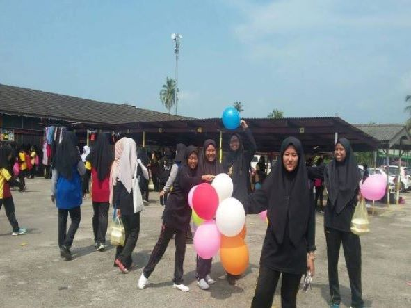
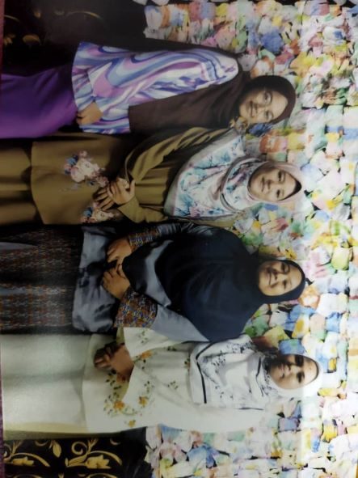
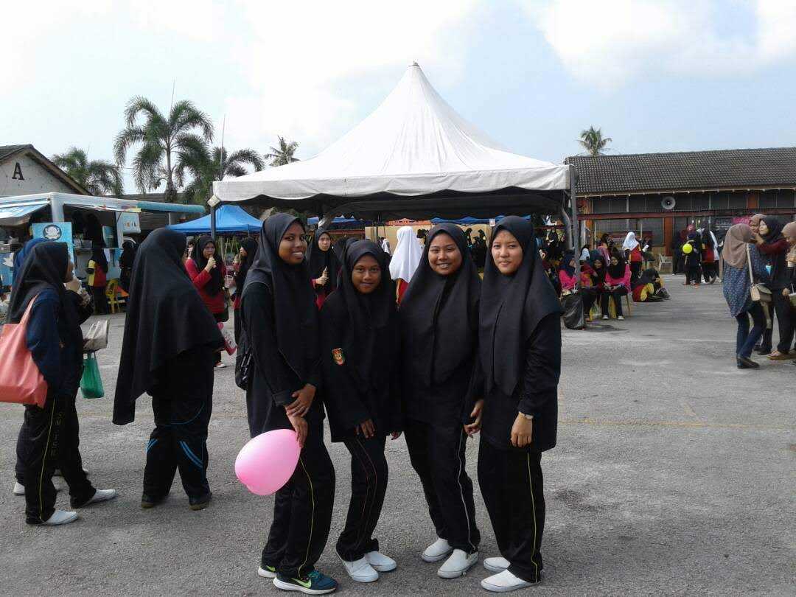
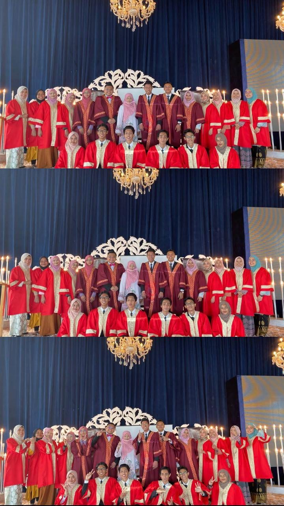
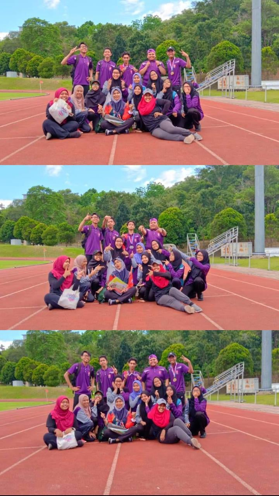
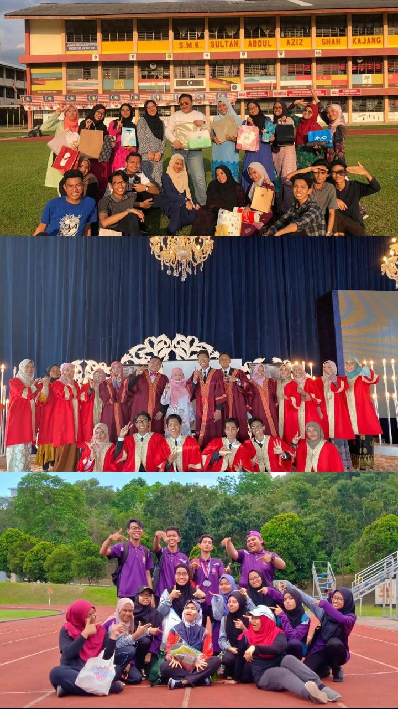

❇ I will start talking about my friends from high school. I don't have many memories with primary school friends because we lost contact. But I'm still grateful that I got many friends from high school. I went to a girls' school, of course, my friends are all girls😂. So these are my friends, we have been friends for 8 years they are the ones who accompany me in difficult and happy times. They are my backbone after my family. Even though we haven't seen each other for almost 3 years but our bond of friendship is still intact.



❇ Afterwards, When I moved to Smk Sultan Abdul Aziz Shah, Kajang, I was very nervous because I'm an introverted person. and I'm thinking about how to get along with people because I'm still new here and away from family. So that, I'm a little scared to hang out with people. But surprisingly when I meet them they are very friendly and make me feel comfortable being friends with them. They are my classmate when I was in grade 6. I love them all.



❇ I met this girl at SMK Saas and it just happened that she was also a student who had just moved to SMK Saas. We have been friends since then. Her name is Siti NurWafiqah binti Shahrin better known as Wafi Waffle. She's from Bangi. She was a kind-hearted friend, who accompanied me through thick and thin. She's everything to me. Even though we have misunderstandings we have improved and our bond of friendship is still strong now. We have created a lot of memory when we were together. Now she's working at Bangi while me studying in Kedah. Thanks to her because she's never given up on our friendship. She is like a gem to me because she is always by my side when it is hard and easy. She was also a good listener when I had problems and of course, I love her so much! 😭💖